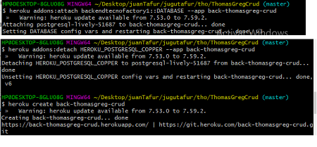

<div class="container">
    <table class="table table-striped table-hover table-bordered align-middle">
        <thead>
            <tr>
                <th scope="col">Referencia</th>
                <th scope="col">Descripcion</th>
                <th scope="col">Ejemplo</th>
            </tr>
        </thead>
        <tbody>
            <tr>
              <td colspan="3" class="titulo"><strong>git</strong></td>
            </tr>

            <tr>
                <td>Comandos git</td>
                <td>
                    npm rebuild node-sass <br />
                    npm install --save-dev node-sass <br>
                    npm update caniuse-lite <br>
                    npm install <br />
                    ng build <br />

                    angular <br />
                    npm install -g @angular/cli <br />
                    ng new project-name --routing=true --style=scss<br />
                    https://angular.io/cli <br />
                    ng serve <br />
                </td>
                <td></td>
            </tr>

            <tr>
                <td>
                    mkdir // crear carpeta <br>
                    rm "Xarchivo" //borrar archivo <br>
                    cat "Xarchivo" //ver archivo en consola <br>
                    touch //crear archivo <br>
                    clear o cls //borrar pantalla <br>
                    ls o dir // ver archivos <br>
                    pwd mostrar la ruta donde se enecuentra <br>
                    git --version // version de git <br>
                    ssh -v //version de ssh <br>
                    godoc fmt //documentation de la liberia <br>
                    ls -lh //ver no solo los documentos que estan en esa carpeta si no ademas los permisos solo estos documentos <br>
                </td>
                <td></td>
                <td></td>
            </tr>

            <tr>
                <td></td>
                <td></td>
                <td></td>
            </tr>

            <tr>
              <td colspan="3" class="titulo"><strong>Heroku</strong></td>
            </tr>

            <tr>
                <td>Comandos Heroku</td>
                <td>
                  heroku login //acceder a la cuenta<br>
                  heroku create xProyect //crear proyecto<br>
                  heroku addons:create heroku postgresql //cread DB <br>
                  heroku config //ver config DB <br>
                  <strong>ver imagen pra compartir DB entre proyectos heroku <br>la primera app es el nombre del proyecto al que querremos donde se instale la segunta referencia de app es el proyecto que tiene la BD <br><br> TENER EN CUENTA EL LA PALABRA COOPER EN ESTE CASO QUE HACE REFERENCIA AL COLOR ESTO ES PARA DESLIGAR DE DEJAR DE COMPARTIR UN BD ENTRE PROYECTOS</strong> <br>
                </td>
                <td>
                  <br><br>

                  <a href="https://devcenter.heroku.com/articles/managing-add-ons">ver info</a>
                </td>
            </tr>

            <tr>
                <td></td>
                <td></td>
                <td></td>
            </tr>

            <tr>
                <td></td>
                <td></td>
                <td></td>
            </tr>

            <tr>
                <td></td>
                <td></td>
                <td></td>
            </tr>
        </tbody>
    </table>
</div>
